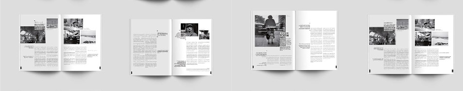

Column
.
They’re unusual in legal documents, but I don’t object to columns in a long document like a contract or a settlement agreement. Columns are an easy way to get a shorter and more legible line length without using large page margins. On a standard 8.5″ × 11″ page, two or three columns are fine. Four is too many.
.
Usually columns look neatest when the rows of text are aligned vertically between columns (i.e., as if they were sitting on the same baseline). Look at a decent newspaper for an example. Getting this result takes a little extra effort. Note your line spacing and make sure any space between paragraphs works out to a whole multiple of the line spacing. The two most common options: set space between paragraphs to zero, or set it to be the same as the line spacing.